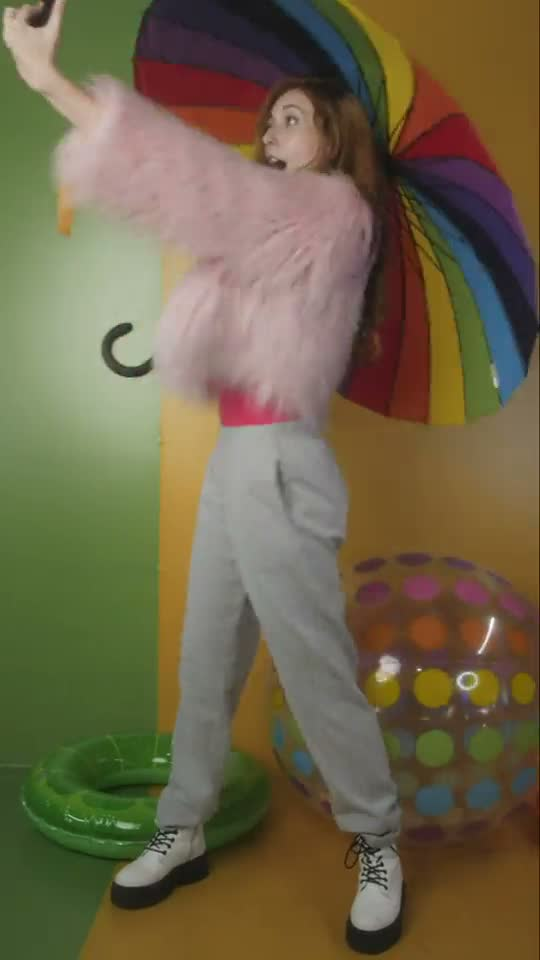

Frame accurate
30fps- Timecode down to the single frame
- Step forward or back one frame at a time
- Mark a start and end, export just that part
Describe the edit you want and watch it happen. Then fine-tune anything by hand, right in your browser.
No download neededYour videos stay on your device
No editing background needed. The full timeline is there whenever you want it.
Video, photos or audio. Thumbnails, filmstrips and waveforms appear right away, and files stay on this device.
Say what you want and the Director applies it, or trim, split and keyframe yourself. Every edit is one undo away.
Render the whole edit or just your in/out range. What you previewed is exactly what you get.
Ask the Director or do it yourself. Either way, every edit lands on a real timeline you can tweak.
Six looks are built in. Pick one, then fine-tune brightness, contrast and saturation to taste.

LOOK PREVIEWRainbow day00:00:12:08No surprises after the render. The details that usually break between preview and export are built to match.
0 uploads. Your videos stay on this device until you choose to sign in.
Every core move has a key. Go ahead, press one.
Replotre gives you the speed of describing an edit and the control of a real timeline.
The quickest answer is to try it. In the studio, press ? for shortcuts and help.
Open the studioReplotre is a video editor that runs in your browser. Describe the edit you want and the AI Director makes it, or edit by hand on a real timeline with keyframes, trims and transitions.
Yes. Open the studio and start editing right away, with no account needed. Signing in is optional and adds cloud projects and MP4 exports.
No. Replotre runs in a current Chromium browser such as Chrome, Edge, Arc or Brave. WebM export happens right in the browser.
No. Start by describing what you want in plain words. When you want more control, every change is on the timeline where you can adjust it yourself.
It applies the edits you describe: aspect ratio, titles and captions, trims, splits, speed, color and positioning. It lists exactly what changed, and you can undo it with one click.
Your videos stay on your device until you choose to sign in. Signing in adds cloud projects, footage analysis and MP4 rendering on our server.
Yes. Framing, fades, transitions and camera moves follow the same math in the preview and in the export, and automated tests check that they match.
WebM, straight from your browser, or MP4 up to 1080p when you’re signed in. You can export the whole video or just the part between your start and end marks.
Yes. On a phone the editor switches to a touch layout with one set of playback controls, tool chips and larger buttons.
No questions match that. Try another word, or open the studio and press ?.
Open the studio, drop in a few shots, and see how far a single prompt and a good timeline get you.